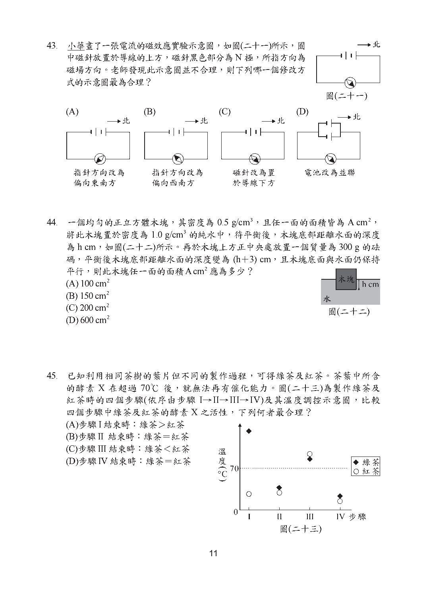

第 13 題對應：九上4-1
將一根帶正電的玻璃棒靠近一顆以絕緣細線懸掛的不帶電金屬球，但玻璃棒與金屬球不互相接觸。關於金屬球兩側所帶電性與受力達平衡狀態的示意圖，下列何者最合理？
此題選項為圖形，請參閱下方官方題本頁面圖片作答。
正解 (B) 這是靜電感應現象：帶正電的玻璃棒會吸引金屬球內的自由電子往靠近棒的一側聚集，使該側帶負電、遠離的一側帶正電。因異性電相吸的距離較近、力較大，金屬球整體會被吸引而向玻璃棒偏擺傾斜。
第 23 題對應：九上6-1
圖(九)為某地區的地表構造特徵示意圖，圖中甲位於中洋脊上，乙位於海溝上，丙位於一陸地的山脈上，且此山脈有火山活動。若將甲、乙、丙三地連線的地下構造，繪製成此地區的板塊構造剖面示意圖，並以箭頭表示板塊運動方向，則下列何者最合理？
此題選項為圖形，請參閱下方官方題本頁面圖片作答。
正解 (C) 中洋脊(甲)是板塊張裂處，新海洋地殼生成並向兩側擴張(箭頭朝外)；海溝(乙)則是板塊聚合處，密度較大的海洋板塊隱沒至另一板塊之下，隱沒帶的岩漿上湧形成陸地上的火山山脈(丙)。應選出同時符合此擴張與隱沒方向的剖面圖。
第 30 題對應：九上6-2
某新聞網站的記者在地震過後取得的地震資訊與等震度分布情形如圖(十三)所示。若他想在網站刊登地震快報與相關資訊，下列是他構想的四個標題，何者最不符合圖中的資訊？
此題選項為圖形，請參閱下方官方題本頁面圖片作答。
正解 (B) 需逐一檢視各標題是否能由圖(十三)的資訊(震央位置、地震規模、各地等震度分布等)直接得到支持。其中若有標題混淆了「規模」與「震度」的概念，或所述的震度分布與圖示不符，即為最不符合圖中資訊者。
第 43 題對應：九下2-2
小華畫了一張電流的磁效應實驗示意圖，如圖(二十一)所示，圖中磁針放置於導線的上方，磁針黑色部分為N極，所指方向為磁場方向。老師發現此示意圖並不合理，則下列哪一個修改方式的示意圖最為合理？

此題選項為圖形，請參閱下方官方題本頁面圖片作答。
正解 (C) 依安培右手定則，以右手拇指指向電流方向，四指環繞的方向即為磁場方向。載流直導線上方的磁針N極應指向與電流方向垂直的水平方向(而非與導線平行)，需選出磁針指向符合此定則的示意圖。